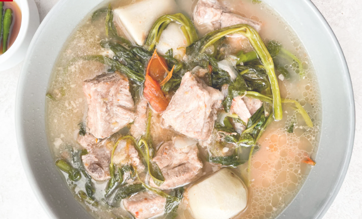

Extra Sour From Scratch Filipino Sinigang
Extra Sour From Scratch Filipino Sinigang

Easy to scale extra sour soup that is both hearty and paleo friendly, can add potato or serve with rice for a starch, or serve as is for a paleo/gluten free variation.
Ingredients (Note soup ingredients are reccomendations and alternatives and amounts are up to you.)
- Tamarind pods around 100g (Alternatively 50g of tamarind paste.)
- Seasoning according to taste (I use salt, pepper, fish sauce (patis), and a small pinch of cayenne pepper.)
- 6-8 Cloves garlic minced or grated.
- 500g cubed pork. (Can purchase from many Filipino/Asian grocers as Sinigang cut)
- 200g aprx 2 to 3 heads of Baby Bokchoi
- 200g young egg plant
- 150g or one yellow onion
- Additional ingredients may include Shrimp, Fish, Okra, Tomato, Peppers, etc. Customization is highly reccomended
Directions
Tamarind soup base
- If purchase whole shell and seperate tamarind meat.
- Place tamarind meat in small sauce pan and add just enough water to cover.
- Bring to boil then reduce heat to light simmer stirring occasionaly.
- Allow to simmer until tamarind is mostly disolved.
- Strain into bowl, rinse sauce pan, return tamarind broth to sauce pan and return to low heat.
- Add garlic and additional seasoning.
- Allow to simmer for at least 30min, longer for a more reduced concentrated sour flavor when making actual soup.
- (Note: at this process may be scaled up to create additional soup base, reccomend to freeze into blocks using ice tray after reduction.)
Sinigang soup
- In large stock pot on medium heat add small amount of oil, and diced onion.
- Once onions begin to cook turn translucent add garlic and cook for 2 more minutes.
- Increase heat and add pork, cooking and turning until browned on all sides.
- Add tamarind soup base and enough water to cover pork.
- Bring to simmer and allow to simmer for 30 min.
- (If using potatoes add cubed potatoes after 15 min.)
- Add sliced eggplant, and bottom stems of bokchoi, add enough water to cover, and simmer for 15 min.
- Add leafy part of bokchoi and add enough water to fill nearly remainder of stockpot. Allow to simmer 15 min.
- Taste and add additional seasoning to liking, then reduce to low heat.
- Can serve as is or serve with or over white rice.